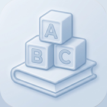

安裝「單字本」主畫面圖示
用描述檔把圖示直接裝到主畫面
- 請用 Safari 開這一頁，按上面的按鈕，跳出提示時按「允許」
- 打開 設定 App，最上面會出現「已下載描述檔」，點進去
（沒看到的話：設定 → 一般 → VPN 與裝置管理）
- 按右上角「安裝」→ 輸入 iPhone 密碼 → 再按「安裝」→「完成」
- 回主畫面就會看到「Vocabulary」圖示
點圖示會以全螢幕打開單字本。
描述檔只包含網址與圖示。要移除：設定 → 一般 → VPN 與裝置管理 → 單字本 → 移除描述檔。